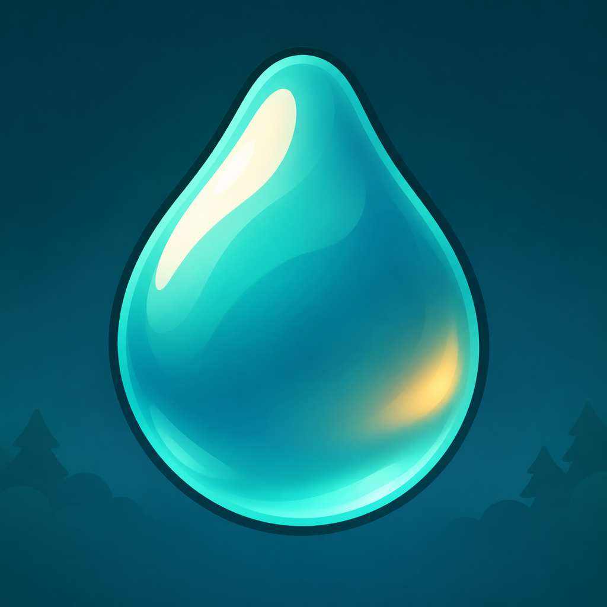

Für iPhone · In Entwicklung
Ein Tropfen.
Dein Weg.
Lenke deinen Regentropfen über nasses Glas. Sammle Wasser, werde größer und finde deinen Weg zwischen Ästen und rauen Glasflächen.
Eine Reise durch den Regen
24 Levels führen dich durch Wald- und Autofensterwelten. Sammle die nötigen Tropfen, erfülle Aufträge und erreiche den Fensterrand. Im Endlosspiel zählt deine weiteste Strecke.
Direkt losspielen
Ziehe an einer freien Stelle nach links oder rechts. Dein Finger muss den Tropfen nicht berühren. Lenke vor einer Kurve früh gegen – dein Tropfen hat Schwung.
Raindrop ist noch nicht öffentlich im App Store verfügbar. Diese Seite begleitet die Entwicklung.